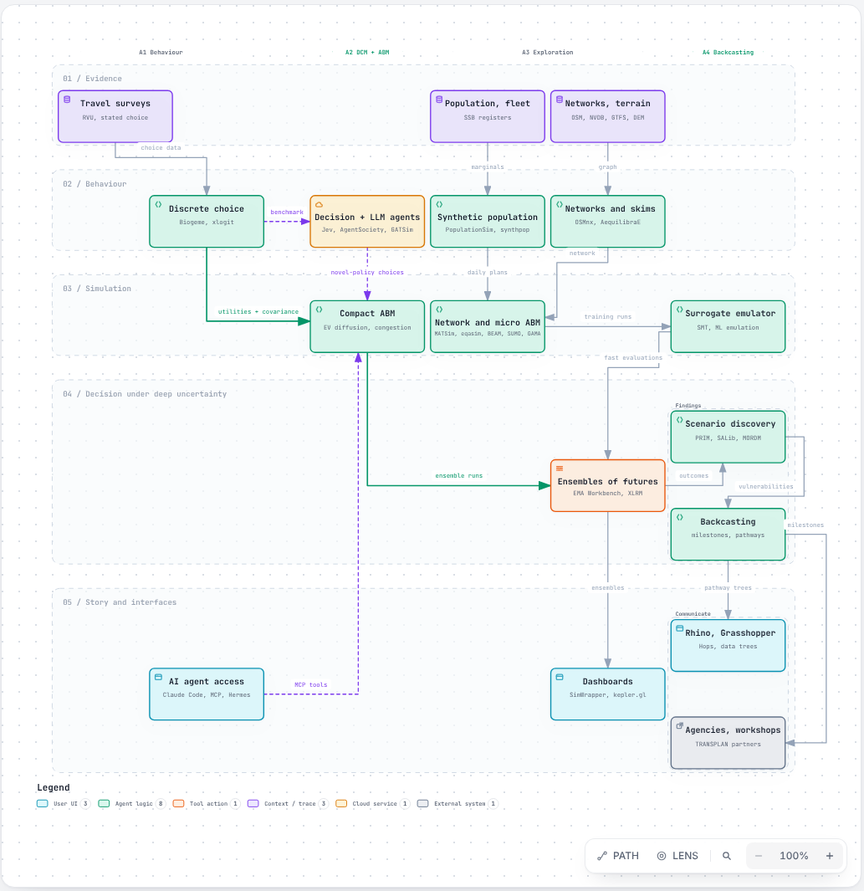
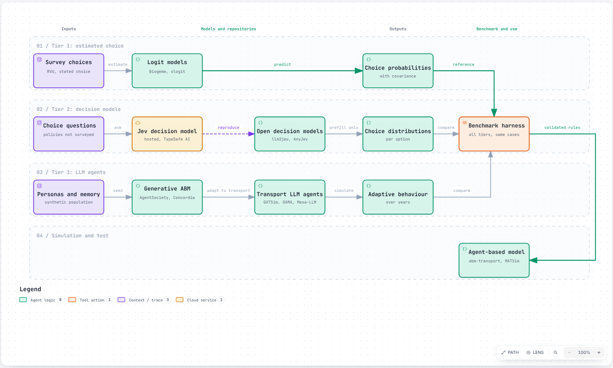
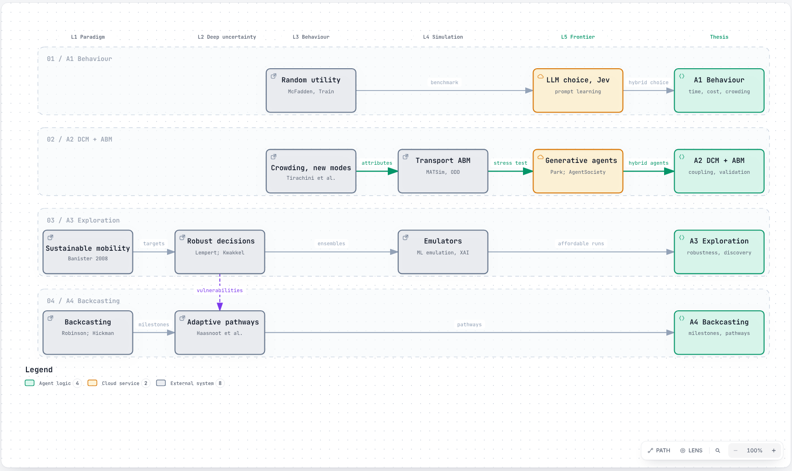
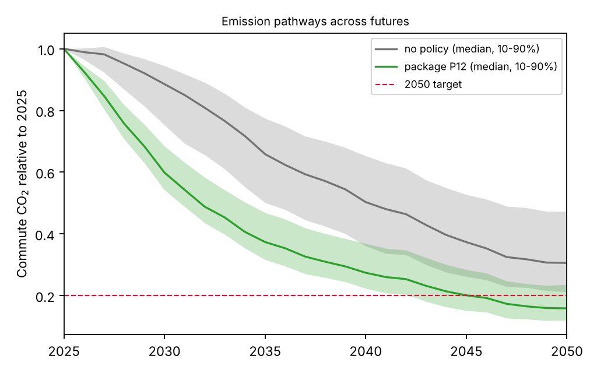
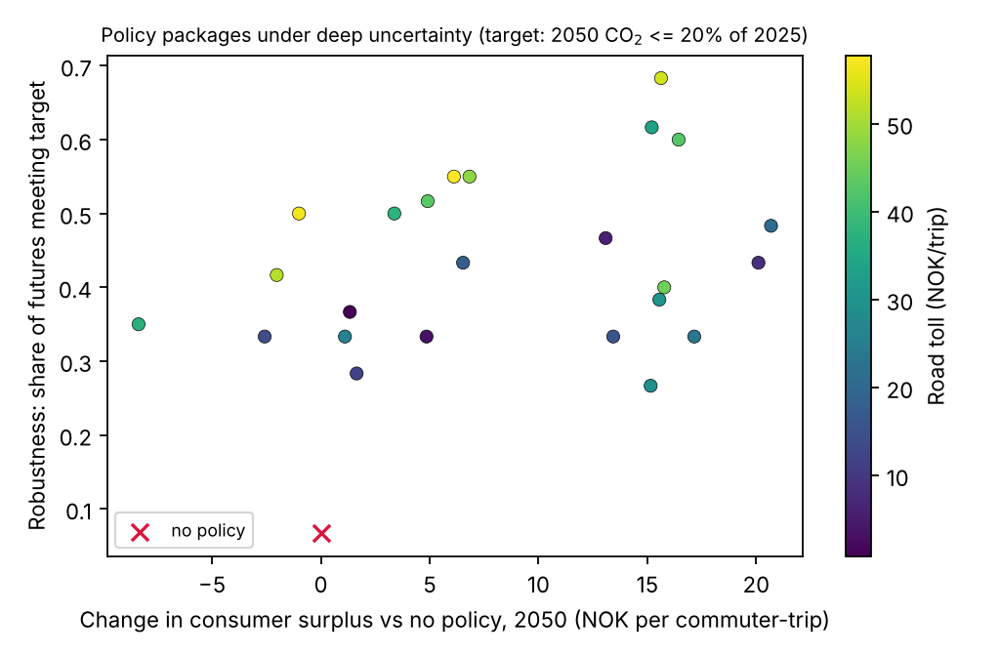
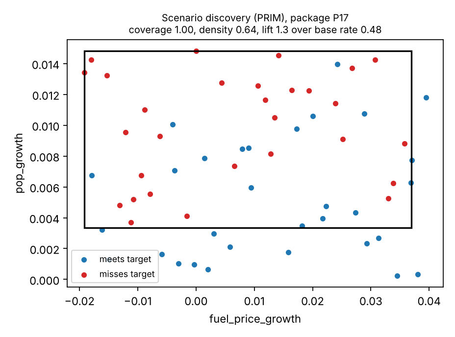

Modelling low-emission transport futures under deep uncertainty
A framework, toolkit and thesis plan that couples estimated travel behaviour with agent-based simulation, explores thousands of futures, and backcasts the decisions that keep a 2050 target reachable.
01 · Whole systemABM system and thesis flow
Five layers across the four articles. Every component is tagged in repo, in bank or proposed. Open the interactive version to pan, zoom, trace the main path and focus on one component.

02 · AgentsHybrid agent tiers
Estimated logit models drive most agents. Decision models answer choices the survey never asked, as probabilities comparable with logit. LLM agents probe adaptation over years. A shared benchmark tests the upper tiers against the first.

03 · TheoryTheory funnel
Broad paradigms narrow to the theories each article tests. Open a level to see its sources and what each gives the thesis.
L1Paradigm: sustainable mobility and backcastingWhy plan to 2050 targets instead of forecasts
- Robinson (1982), Energy backcasting, Energy PolicyStart from a desirable future and work back to the policies that reach it
- Banister (2008), The sustainable mobility paradigm, Transport PolicyManage demand and accessibility, not only speed
- Hickman and Banister (2014), Transport, Climate Change and the CityTransport backcasting studies; template for A4
L2Deep uncertainty: robustness, discovery, pathwaysHow to decide without one predicted future
- Lempert, Popper and Bankes (2003), Shaping the Next One Hundred Years, RANDRobust decision making across many futures
- Bryant and Lempert (2010), Thinking inside the box, TFSCScenario discovery: the futures in which a policy fails
- Haasnoot et al. (2013), Dynamic adaptive policy pathways, GECSignposts and triggers; extends backcasting over time
- Kwakkel (2017), The Exploratory Modeling Workbench, EMSThe software behind dmdu-explore
L3Behaviour: random utility, crowding, new mobilityWhat travellers value and how it shifts
- McFadden (1974); Ben-Akiva and Lerman (1985); Train (2009)Logit and mixed logit; estimation for A1
- Tirachini, Hensher and Rose (2013); Tirachini et al. (2017), TR Part ACrowding costs and estimated crowding multipliers
- Tirachini (2020), Ride-hailing review, TransportationSubstitution from public transport; a new-mobility uncertainty
- Tirachini and Antoniou (2020); Fielbaum, Tirachini and Alonso-Mora (2024)Automated and on-demand public transport as policy levers
L4Simulation: agent-based transport modelsHow micro-choices become system outcomes
- Horni, Nagel and Axhausen (2016), MATSim bookThe reference large-scale transport ABM (A2)
- Grimm et al. (2020), ODD protocol, JASSSHow the ABM is documented
- ML emulation of ABMs (arXiv 2005.02077); surrogates and XAI (arXiv 2510.16742)Emulators that make large ensembles affordable (A3)
L5Frontier: LLM agents and decision modelsWhat is new and still unproven
- Park et al. (2023), Generative agents, UISTMemory, reflection and planning
- AgentSociety (arXiv 2502.08691)LLM agents at city scale
- LLM2Jev (arXiv 2610.02076)Decision models that return choice probabilities (tier 2)
ThesisFour articlesWhere the funnel lands
- A1 BehaviourL3 and L5: time, cost, crowding, technology; LLM choice as benchmark
- A2 DCM + ABML3 and L4: estimated choices driving agents; validation
- A3 ExplorationL2 and L4: robustness and scenario discovery with emulators
- A4 BackcastingL1 and L2: milestones and adaptive pathways with agencies

04 · ToolkitSkills and status
Tested modules exposed as Claude Code skills, an MCP server and Grasshopper Hops components.
| Layer | Skill | What it does | Status |
|---|---|---|---|
| Behaviour | dcm-estimate | Multinomial logit with Biogeme, cross-checked by an independent estimator | tested |
| Simulation | abm-transport | Agents to 2050: EV adoption, mode choice, congestion feedback, policy levers | tested |
| Decision | dmdu-explore | EMA Workbench ensembles, robustness, PRIM, backcasting | tested |
| Networks | osm-network | Road graph, terrain grades, EV energy, least-energy routing | tested |
| Operations | vrp-solve, opt-model | Vehicle routing; LP/MIP with Gurobi, CPLEX or HiGHS | tested |
| Design | gh-datatree | Grasshopper data-tree model and debugging agent | live Rhino run pending |
| Agents | benchmark harness | Same choice situations asked to logit, decision models and LLM agents | proposed |
05 · OutputsSample results
From the demonstration study on synthetic data with illustrative parameters. They show what the toolkit produces, not findings about Molde.



06 · Navigate the repositoryWhere everything lives
Framework
Landscape of approaches, the five-layer loop, hybrid agents, research flow, PhD alignment, what is missing.
Proposal outline
Research questions, four articles, data, methods, work plan.
Skills
Each skill has a SKILL.md and tested scripts.
Servers
MCP server and Grasshopper Hops app over one shared core.
Knowledge bank
About 300 license-checked open-source sources, cloned with credit or linked.
Improve a diagram
Edit the JSON, re-run Archify's checks, commit. Anyone can propose a change.